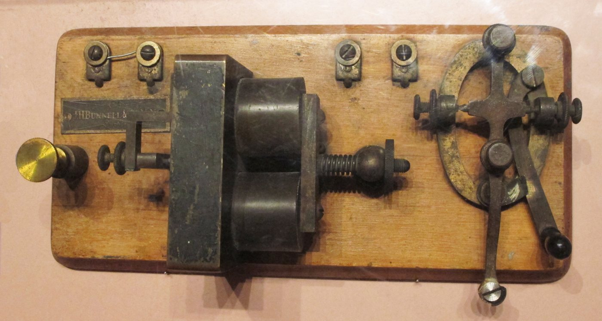
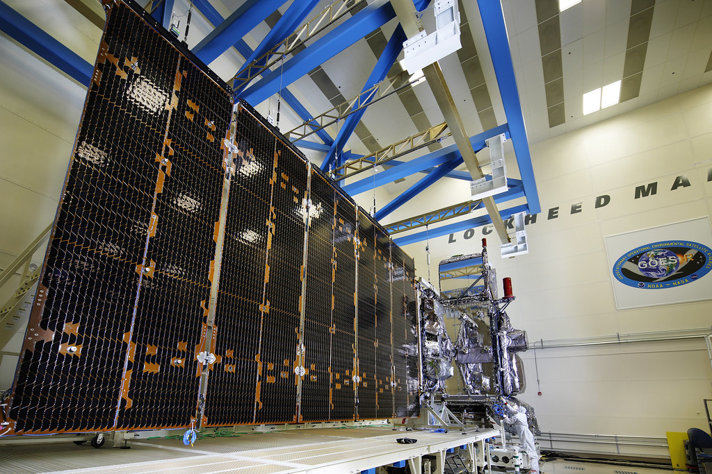
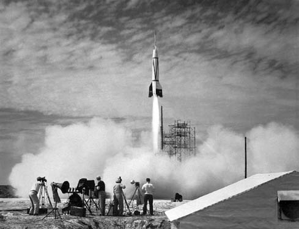
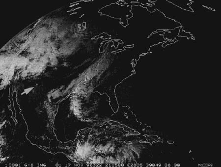

Pentecost University | Data Communication
From Telegraph Pulses to Intelligent Satellite Networks
This webpage presents my Data Communication assignment in a more interactive and professional format, combining topic summaries, an embedded telegraph video, assignment highlights, and selected figures that support the discussion.
The goal of this presentation is to show strong understanding, clean organization, and clear visual communication, so the main ideas stay easy to follow from start to finish.
The assignment preview, telegraph video, and topic figures are all available inside this same website.
Assignment Preview
A structured on-page view of the submitted work
Instead of only linking the document, this section brings the main assignment content directly into the website so the reader can quickly understand the scope, direction, and key conclusions of the paper.
What the assignment covers
The paper focuses on the principles and applications of satellite communication, especially how modern satellite systems support internet access, wide-area coverage, real-time communication, and improved connectivity in places where ground infrastructure is limited.
- Explains orbital mechanics, signal transmission, and frequency spectrum management
- Discusses satellite zooming through High-Throughput Satellites and spot beam technology
- Compares satellite systems with terrestrial communication networks
- Examines challenges such as latency, weather effects, debris, and cybersecurity
- Explores future integration with 5G, 6G, and AI-driven network management
Why this topic matters
The assignment shows that satellite communication is no longer only a theory topic. It now supports internet access, global navigation, broadcasting, and real-time communication, especially in places where terrestrial infrastructure is expensive or unavailable.
How the paper is organized
The discussion connects orbital mechanics, frequency bands, signal coding, environmental effects, and system performance instead of treating them as separate ideas. It also highlights satellite zooming, showing how focused beams improve efficiency and capacity in high-demand areas.
Main message from the paper
The final argument is that modern satellite systems, especially HTS and LEO networks, can help close Ghana’s digital divide by reaching communities that terrestrial networks cannot economically serve, while future integration with AI and 6G will make these systems even more adaptive.
Evolution and role
How satellite communication became part of modern global infrastructure.
Technical principles
Orbital mechanics, spectrum choice, modulation, and signal coding.
Satellite zooming
HTS, spot beams, and frequency reuse for higher throughput.
System comparison
Satellite versus terrestrial communication in coverage, latency, and cost.
Current challenges
Rain fade, delay, orbital debris, and cybersecurity vulnerabilities.
Future direction
6G integration, autonomous operations, and AI-assisted resource management.
Core Concepts
The building blocks of data communication
Data communication is the exchange of information between devices through a transmission medium. Effective communication depends on the sender, the message, the path used, the receiver, and the rules that govern how the message is handled.
Communication Model
Every system needs a source, an encoder, a transmission medium, a receiver, and clear protocols. Accuracy, timing, and delivery all matter when information moves from one point to another.
Transmission Media
Messages can travel through copper cables, fiber optics, radio waves, or satellite links. Each medium has different strengths in speed, reach, cost, and reliability.
Performance and Reliability
Good networks balance bandwidth, latency, security, and error control. The goal is not only to send data, but to send it clearly, quickly, and with minimal loss.
Historic Breakthrough
The telegraph introduced the power of encoded digital messaging
The telegraph changed communication by turning language into electrical signals that could travel long distances. Morse code made it possible to represent messages as dots and dashes, laying an early foundation for modern digital communication.
Sender
Receiver
.-
-...
-.-.
..
---

Why the telegraph still matters
- It converted messages into coded signals that could be transmitted electrically.
- It proved that distance could be reduced through communication technology.
- It introduced the idea of signal encoding, transmission, and decoding.
- It became an important step toward telephony, networking, and modern internet systems.
Embedded Video
Watch the telegraph explanation without leaving the website
The video is embedded directly into this page, so the presentation stays inside the same website while still giving visual explanation for the topic.
Modern Networks
Satellite communication expands data access beyond ground limits
My recent assignment explored satellite communication as a major part of modern global data infrastructure. It shows how wide-area coverage, intelligent beam control, and integration with future networks can improve communication where ground systems alone are not enough.



Orbital Systems
LEO, MEO, and GEO satellites each offer different trade-offs in coverage, speed, and latency. The higher the orbit, the wider the coverage, but usually the longer the delay.
High-Throughput Satellites
Spot beams and frequency reuse make modern satellites more efficient. They focus signal power in specific areas, which increases capacity and improves service quality.
Future Direction
Satellite systems are becoming part of 5G and 6G environments. With AI-assisted resource management, they can respond more intelligently to demand, weather, and network conditions.
Fast and low latency
Usually 500 km to 2,000 km above Earth, with latency often around 20 to 40 ms for broadband-style services.
Balanced coverage
Often 8,000 km to 20,000 km, making it useful for navigation systems and moderate-latency communication services.
Wide-area reach
At about 35,786 km, GEO supports major coverage footprints, but with much higher propagation delay.
What Inspires Me
Using communication technology to close the gap
I am inspired by the idea that communication technology can connect people who would otherwise be left behind. From the telegraph to satellites, every major advance shows how innovation can reduce distance, increase opportunity, and support learning, business, and development across Ghana and beyond.
Resources
Useful links and internal sections connected to this assignment
These options help the reader stay inside the website for the main experience while still keeping important external links available when needed.
Assignment Preview
Read the structured assignment summary inside this webpage, then open the original Word file only if the full document is needed.
Read assignment on page Open Word copyTurnitin Platform
This opens the official Turnitin login page. A private submission becomes available after signing in with the correct student account.
Open TurnitinTelegraph Video
The video is already embedded above, so this link takes the reader back to the on-page player instead of moving them away from the presentation.
Open video on page Open YouTube directlyTopic Images
View the telegraph photo and the satellite figures used to make the presentation look more complete, visual, and professional.
View figure gallerySatellite figures on this page were extracted from the assignment document, while the telegraph key image was added as a historical visual reference.